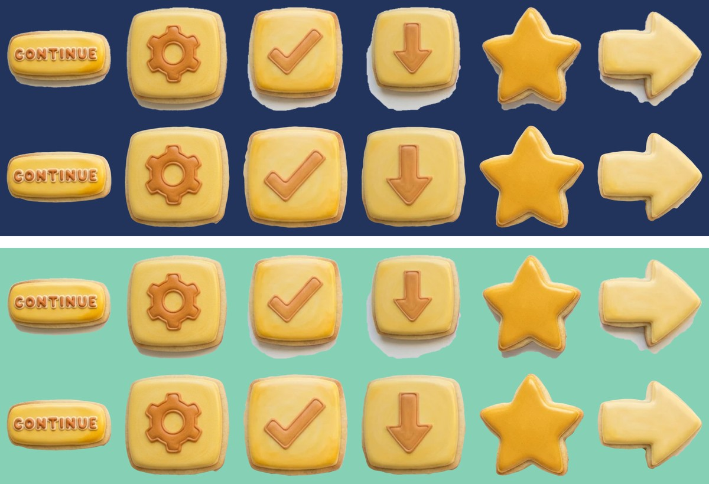
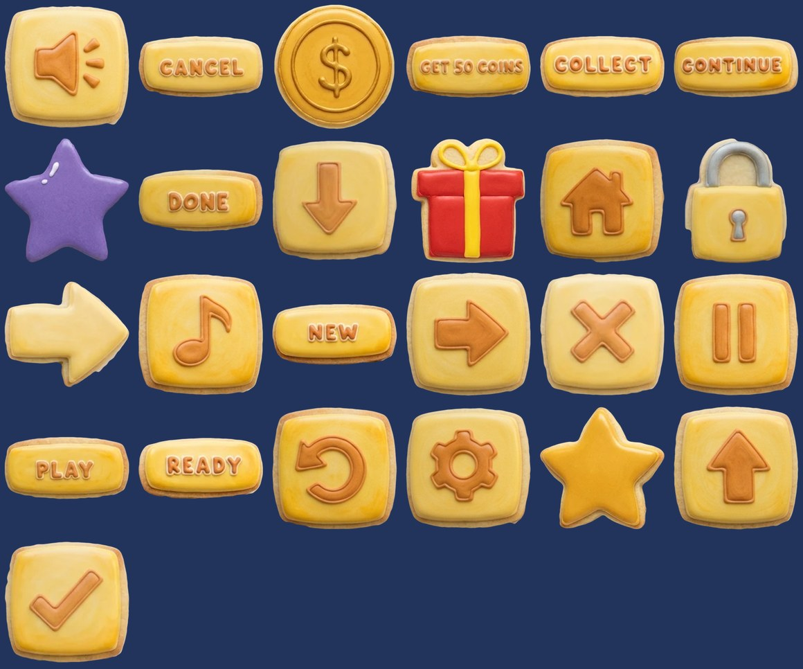
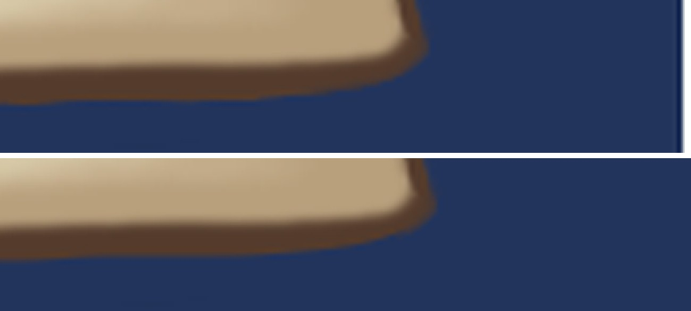
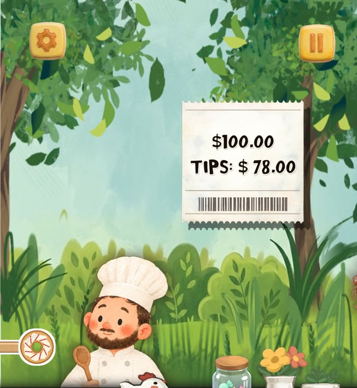
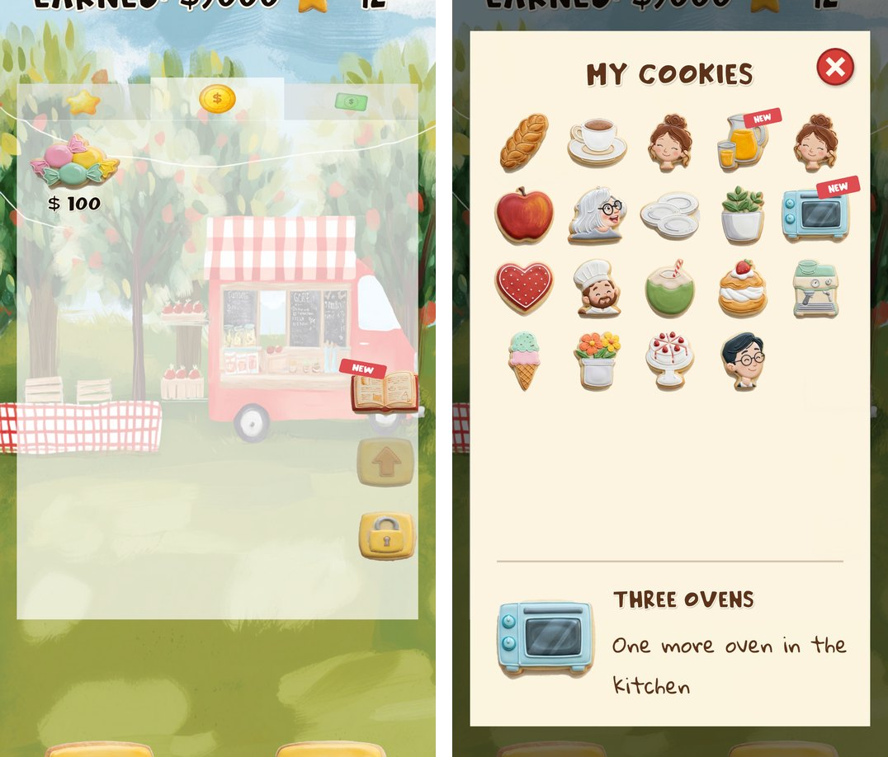
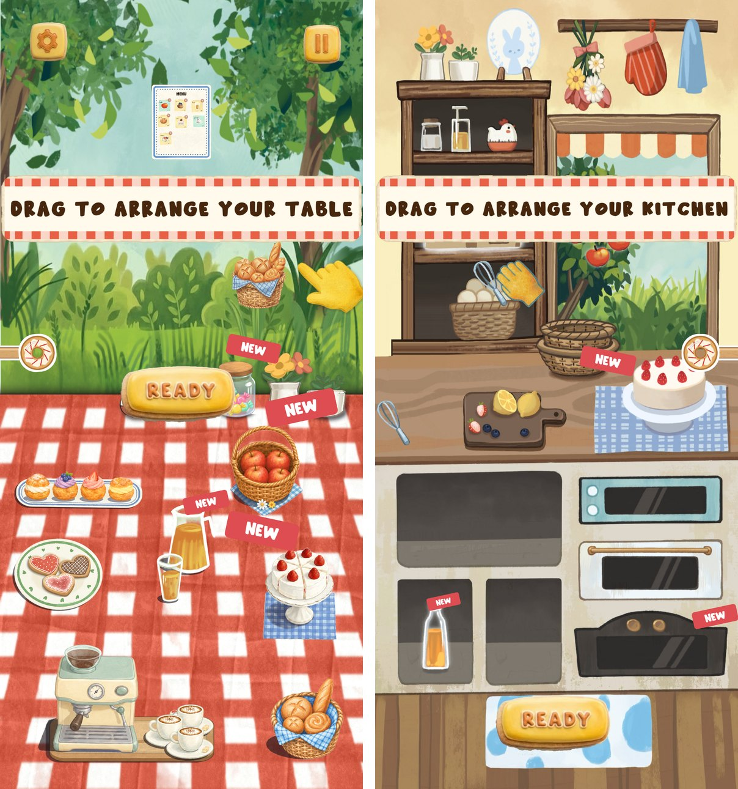
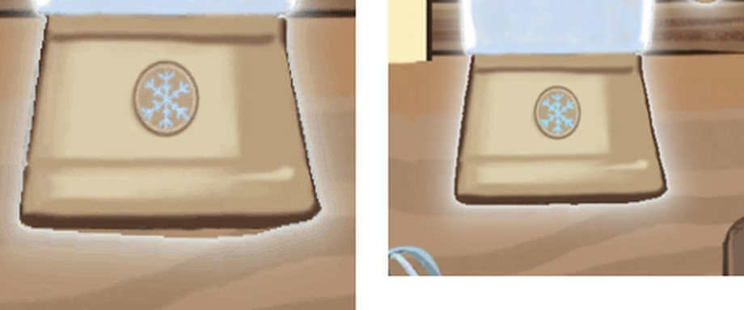
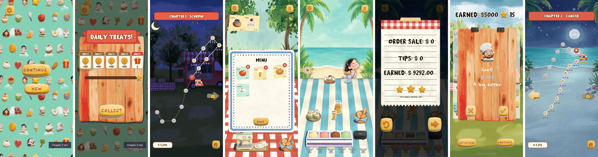
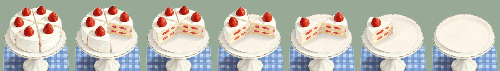
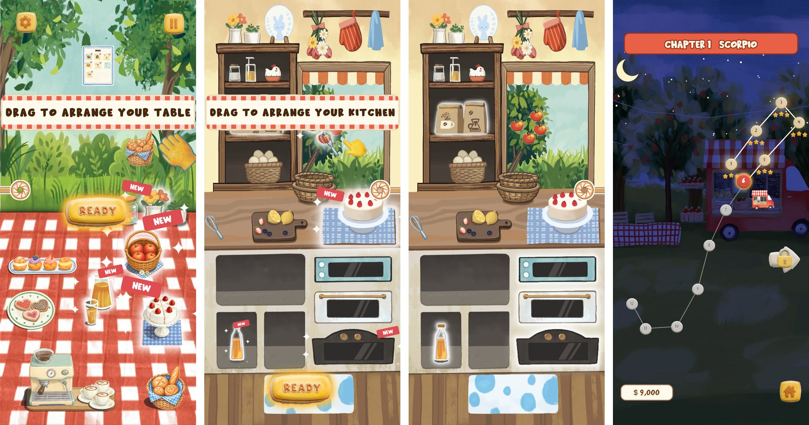

Food Truck Cafe
Your report for 17 and 18 November. 26.11.22 (build 35) and the 15 Stars purchase are in Apple's review, no message from Apple; they go on sale by themselves once approved.
1Next
You
Glows (Current): in the game as you picked them.
Cookie buttons (Current): cleaned again with smooth edges; tick to apply.
China (Q&A): the game is off the China mainland store, nothing else changed.
Blender's bottom line and your test run's fixes (Current): done. No test build until you say.
Players (Analysis): nobody has reached day 3; a tick to try it without the ad before day 3.
Me
Storage, 18 November: your Mac had 6.8 GB free of 460 GB (the warning). Now 219 GB free. Deleted with your yes: Xcode's build cache (167 GB), old game builds (73 GB, kept today's build and the two store versions' archives), old editor screenshots and video frames (23 GB), old iPhone support files and simulators (29 GB), 12 merged work copies of the project (15 GB, all saved in git). Claude: old session logs and job folders of those copies. Kept: the Claude app's agent VM (11 GB, it needs it), all art, finished videos, store screenshots.
Version numbers: the build's date with the full year (2026.11.18), builds from 0 each day.
26.11.22 with 15 Stars: approved 18 November 12:13 PST, releasing automatically.
ChatGPT, after 18 November 20:21: the cake retouch, only if you tick it.
2Q&A
China mainland: the game is off that store now (18 November)
- Done as you chose: Food Truck Cafe is "Not Available" in China mainland. Apple says the store shows it within 24 hours.
- Every other country is unchanged: 174 countries, Hong Kong, Macau and Taiwan included.
- People in China who already have the game keep it. No new build was needed, and it can be switched back on any time (Pricing and Availability).
- Why it made sense: ads did not load there (3 players, 6 days, 0 ads), and purchases would need a Chinese game approval number. Apple's two China warnings and the missing-approval mark should go with it.
- 26.11.22 and 15 Stars were approved at 12:13 PST, a few minutes after China came off. They had waited three days with no reviewer opening the game. Apple gives no reason, but the timing points to a China check holding the new purchase: China wants a government approval number for games with purchases. Release is automatic, so it goes live by itself. If China ever comes back, it would probably need that number first.
3Current
Cookie buttons: cleaned again, smoothly, 18 November. Not applied yet; tick and I put them in.


- A different method this time: instead of removing leftover pixels one by one, each cookie gets one smooth outline drawn just inside its own edge. So the edge is a clean curve and nothing pale is left round it.
- Gone: the grey-white backdrop, the soft shadow, and the dark line where the cookie touched the table.
- I did these here, not with Gemini: Gemini would repaint the cookies, and they would no longer be the ones you picked.
Blender: the bottom line, smoother, 18 November. In the project, in no build yet.

- The lower edge of the dark line was drawn in small hard steps. It is now the same edge as one smooth, soft curve.
- Only that edge changed; the line's upper side and everything above it are your pixels. The glow is repainted to fit.
Your test run: the other fixes, 18 November. In the project, in no build yet.
1. Receipt height. Back up where it used to be: it rises to the old height, on the served customer's side.

3. NEW on the book. When a cookie is bought, the book gets a NEW label, and so does that cookie inside. Opening the book clears the book's label.

4, 5, 6 and the kitchen hint.

- 4. NEW while arranging: on everything bought since the last day, on the table and in the kitchen. Gone when the day starts.
- 5. Two Ready buttons: Ready on the table takes you to the kitchen, Ready in the kitchen starts the day. The other way round works too: kitchen first, then the table's Ready starts. In the kitchen the button sits on the rug.
- 6. The "drag to arrange" card and hand: only the first time a player arranges (the tutorial), never again after that. Old saves see it once, because the kitchen part is new.
- Kitchen hint: the same card, "Drag to arrange your kitchen", with the hand moving a whisk.
Smoother menu and the blender's base, 18 November. In test build 2026.11.18 (1), on TestFlight.

- Menu: the game now runs at 60 pictures a second instead of 30, so the cookies and the truck move in steps half as big.
- Blender: the brown under the outline was the counter showing through a small gap; the glow is repainted from your picture.
Cookie style everywhere: buttons, stars, Daily Treats, map, 18 November. In test build 37. The app icon stays the painted truck (your tick).

- Every button (gear, pause, sound, music, home, replay, next, arrows, tick, cross, Continue, New, Collect, Ready, Done, Play, Cancel, Get 50 coins), the stars, the coin and gift (also inside the Daily Treats cards), the map's day circles, arrows and locks. Same sizes and places as before.
Your ticks and notes of today, done, 18 November. Going into test build 37.
Blender, slower (you said ship it): each flavour 1.1 s instead of 0.7, the ice and the blade turning slower. The brown at the bottom of the first clip was the wooden counter and the clip's colours, not the game.

Receipts: one place each side, mirror images about the middle, kept clear of the edges.
Choux order: one of the four new choux at random. Book: bread and coffee in it. Bugs folder: cleared.
Cake: your three fixes, 17 November, 20:50. In test build 37.

- 1, the layers: the cut faces are ChatGPT's original ones again (from the old frames), a little crisper.
- 2, frame 2: the pale patch with a hard edge on the plate is gone. All frames now share one plate picture, matched to the plate's own colour.
- 3, one slice: the shade at the slice's corner is gone. Each cut face has one small shade under it, and it leaves with its slice.
- ChatGPT is out of pictures until 18 November, 20:21. Your three fixes are worded and waiting in its chat; I did them here meanwhile.


Glows in the game, as you picked them, 18 November. In the project, in no build yet.

- Default (kitchen, during play): B's white glow held still at its middle, no stars, on everything you can tap: ovens, blender, juice, coconuts, waffle machine. It goes off while a thing is busy (an oven baking), locked, or being arranged. The coffee bags and the apples keep the glow painted into their own pictures.
- B, new things: white glow and twinkling stars beside the NEW label, on the table and in the kitchen, while arranging. The thing itself does not move.
- C, Ready and the map: gold glow with a shine sweeping across, on both Ready buttons and on the map's red circle. Off while Ready cannot be pressed.
- A, next action: made (gold, beating, no hop) and waiting for your rules on what counts as "next".
The kitchen with everything bought, 15 November. Every food, all three ovens, the coffee machine and ice cream at their top level.

- The pull handle sits on the cake at its starting height; it can be dragged up or down.
4MVP
For the release after 26.11.22. Nothing here is in a build.
The three things for the next release (your pick):
- Redraw the choux. Done: the new plate with ChatGPT's four flavours is in test build 36, and you kept them over the repaint.
- Redesign the kitchen. Seven pieces are arrangeable in test build 36 (free on the table, snapped in the cabinets, red blocks the day). After it: the pieces back at their old places, whisk at the left edge.
- Improve the App Store page. Your ticks on the Q&A list choose which parts.
5Backlog
Nothing open.
6Analysis
Players, 14 to 18 November. Read 18 November, 16:50 UTC. Apple's reviewers and your phone left out.
| Day (UTC) | Downloads | Page views | New players | Tutorial done | Day 1 done | Day 2 done |
|---|---|---|---|---|---|---|
| 14 Nov | 15 | 271 | 9 | 5 | 2 | 1 |
| 15 Nov | 10 | 421 | 6 | 1 | 1 | 1 |
| 16 Nov | 14 | 234 | 13 | 8 | 7 | 2 |
| 17 Nov | 3 | 73 | 5 | 3 | 1 | 1 |
| 18 Nov* | – | – | 7 | 6 | 5 | 0 |
| Total | 42 | 999 | 40 | 23 | 16 | 5 |
* 18 November until 16:50 UTC. Apple has no numbers for it yet.
- Nobody has started day 3. Out of 40 new players, 5 finished day 2 and then stopped. One player (d1c449, Philippines) stayed 2.5 hours, watched 9 ads, and still stopped after day 2. On 15 November two players closed the game 10 to 20 seconds after day 2 ended, just when the second between-days ad plays.
- Tutorial: 23 of 40 finished it. Those who quit, quit at the oven steps (8 "Tap the oven to bake more bread", 9), as last week.
- Day 1: 16 of 20 who started it finished it.
- Store: the rush of 14 to 16 November is over. Apple showed the game 3,236 times on 15 November and 648 times on 17 November, so downloads fell from 10 to 15 a day to 3.
- Money: ads $0.30 for 11 to 17 November. No purchases (Remove Ads is on sale; 15 Stars waits on review).
My suggestion: no between-days ad before day 3 is finished, then see whether players reach day 3.
7Marketing
The App Store page, ratings, keywords, events, anything that brings players. Kept here until you decide.
App Store page: what we can improve (15 and 16 November). Open: tick what to do, whenever you are ready.
Today: name "Food Truck Cafe", subtitle "Bake, serve & grow your cafe", English only, 0 written reviews, 6 of 10 screenshots, one video. Apple ranks search by name, subtitle, keywords and category, and by downloads and ratings. The description does not count for search.
A. To be found more
- Ask happy players for a rating. Apple's own popup after a 3-star day, at most 3 times a year. A small code change; the biggest win.
- New subtitle and keywords. Ours miss ice cream, waffles, the beach, coffee. For example: subtitle "Cozy bakery & cooking tycoon"; keywords restaurant,kitchen,chef,coffee,barista,ice cream,dessert,cake,pastry,diner,cute,sweet,waffle,beach. Store text, so only with your words.
- UK and Australia English pages. More keyword fields. Common practice; Apple does not say how much it helps.
B. To look better once found
- A universal picture (new with iOS 27). One wide picture for the top of the page and for search results, and what Apple needs to feature a game in its big spots. We have none. Goes up without a new version, through Apple's review.
- Video. It ends on the night beach and jumps back to the forest; it opens on a customer waiting; the cover is the forest serve. Fix: open on a serve, loop smoothly, ice cream on the cover.
- Screenshots. Captions sit in three different places; the kitchen has empty ovens; the shop shows dark locked shapes; 4 slots are unused.
- Description and promotional text. Still says "serve two customers at a time"; no beach, ice cream, chapters or star shop. The promotional text can change at any time without review.
- iPhone Duo screenshots. They give a "made for iPhone Duo" badge and become required in April 2027. Our video already fills the Duo slot.

C. News slots
- An in-app event for the winter chapter in mid-December. Free; shows on the page, in search and on the Today tab. Needs a 16:9 and a 9:16 picture.
- A custom page for ice cream, tied to the keyword, with the beach pictures first.
Checked: our pictures follow Apple's rules (no prices, links or awards; fit for 4+). Later: Apple's A/B test of icon and pictures, once there are more visitors.
Sources: Apple's pages on search, the product page, asset best practices, custom pages.
8C chapter
The Christmas chapter. Your ideas, kept here as the plan grows.
Your ideas, 18 November.
- Colours: pink (the table cloth) and white (snow).
- Customers wear winter clothes.
- Food: cookies.
- Drinks: several hot drinks.
From your plan of 15 November: out by mid-December, behind the chapter switch until then.